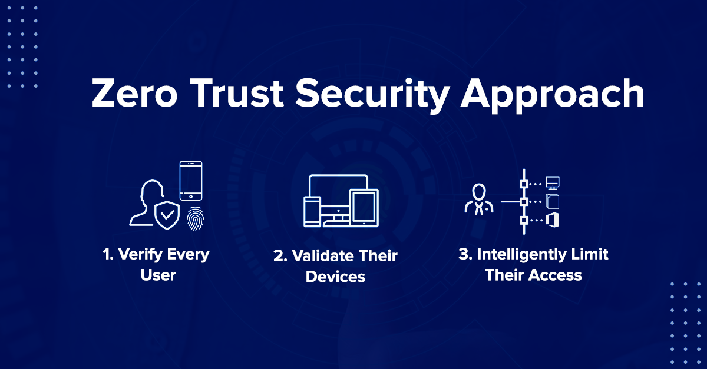

Cybersecurity Trends & Updates 2025
Understanding Cybersecurity in 2025
Cybersecurity has evolved beyond being just an IT concern—it is now a global priority affecting individuals, businesses, and governments. The rapid digitization of industries, increased cloud adoption, and growing reliance on AI-driven systems have expanded the attack surface for cybercriminals.
As threats become more sophisticated, traditional security approaches are no longer sufficient. Emerging cyber threats in 2025 include:
- AI-Powered Cyber Attacks: Cybercriminals are using AI-driven malware, deepfake phishing, and automated hacking tools to bypass security measures.
- Social Engineering Scams: Advanced phishing campaigns exploit human psychology, making attacks harder to detect.
- Ransomware Evolution: Cyber gangs have adopted double and triple extortion tactics, threatening to leak sensitive data if victims refuse to pay.
- Supply Chain Attacks: Attackers infiltrate trusted vendors and third-party services, compromising entire organizations.
- Nation-State Cyber Warfare: Governments are engaging in cyber espionage and infrastructure sabotage, posing serious geopolitical risks.
To combat these growing cyber threats, organizations and individuals must implement proactive security strategies such as Zero Trust Architecture (ZTA), multi-factor authentication (MFA), endpoint detection and response (EDR), and AI-driven threat intelligence.
Understanding the cybersecurity landscape of 2025 is crucial for staying ahead of attackers and safeguarding digital assets, privacy, and critical infrastructure.
Zero Trust Security Model
The Zero Trust framework assumes that no entity, whether inside or outside a network, can be trusted by default. It requires continuous authentication and strict access controls.
Key principles:
- Always verify identities before granting access.
- Restrict access to essential resources only.
- Monitor network activity for unusual behavior.
The Zero Trust Security Model is a modern cybersecurity framework that assumes no entity—whether inside or outside a network—can be trusted by default. Instead, it enforces strict identity verification, continuous authentication, and least privilege access controls to minimize security risks.
What Is Zero Trust?
Traditional security models operate on the "trust but verify" principle, assuming that threats primarily come from outside the network. However, Zero Trust follows a "never trust, always verify" approach, assuming that anyone—even those inside the network—could be a threat.
This framework is designed to prevent unauthorized access, limit data breaches, and reduce insider threats by enforcing granular security policies.
Key Principles of Zero Trust
- Verify Identities Continuously: Implement multi-factor authentication (MFA), biometrics, and AI-driven identity verification before granting access.
- Implement Least Privilege Access: Users should only have access to the minimum resources necessary for their roles.
- Micro-Segmentation: Divide the network into isolated zones to limit lateral movement of attackers.
- Continuous Monitoring & Analytics: Monitor user behavior, network activity, and device compliance for anomalies and potential threats.
- Assume Breach: Always operate under the assumption that the network has already been compromised, and proactively defend against threats.
Benefits of Zero Trust Security
- Reduces the Attack Surface: By eliminating implicit trust, it prevents attackers from gaining unauthorized access.
- Prevents Data Breaches: Continuous identity verification and real-time monitoring detect anomalies before data leaks occur.
- Protects Cloud Environments: Ensures secure access to cloud services, SaaS applications, and remote systems.
- Limits Lateral Movement: Attackers cannot easily move across systems due to micro-segmentation and strict access controls.
- Enhances Compliance: Aligns with GDPR, HIPAA, NIST 800-207, and other security regulations.
AI-Powered Cyber Attacks

Artificial Intelligence (AI) is transforming the cybersecurity landscape, providing advanced tools for detecting and mitigating threats. However, cybercriminals are also leveraging AI to launch sophisticated, automated, and adaptive cyberattacks that pose serious risks to individuals, businesses, and governments.
How Hackers Use AI for Cyber Attacks
- Deepfake Phishing: AI-generated voice and video deepfakes are used to impersonate executives, employees, or even family members to trick victims into transferring money or revealing sensitive information.
- Automated Hacking: AI-driven bots can exploit vulnerabilities in real-time, scanning networks and systems faster than human hackers.
- AI-Generated Malware: AI is used to create adaptive malware that alters its code to evade detection, making traditional antivirus software ineffective.
- AI-Enhanced Social Engineering: AI-powered chatbots can mimic human behavior and interact with victims to steal credentials or spread malware.
- Advanced Credential Stuffing Attacks: AI analyzes stolen credentials and automates login attempts across multiple websites, bypassing traditional security measures.
- AI-Driven Ransomware: AI helps ransomware spread faster, identify high-value targets, and optimize ransom demands based on a victim’s financial capacity.
Defense Strategies Against AI-Powered Attacks
- AI-Based Threat Detection: Use AI-driven security tools that detect anomalies in real-time and predict potential cyber threats.
- Zero Trust Security Model: Implement multi-factor authentication (MFA), least privilege access, and continuous monitoring to prevent unauthorized access.
- Deepfake Detection Software: Utilize AI-powered solutions to detect deepfake videos and voice impersonation attempts.
- Behavioral Analysis: Deploy machine learning algorithms to analyze user behavior and detect suspicious activities.
- Secure AI Systems: Protect AI models from being manipulated or poisoned by cybercriminals.
- Security Awareness Training: Educate employees on AI-based phishing, deepfake scams, and automated cyber threats.